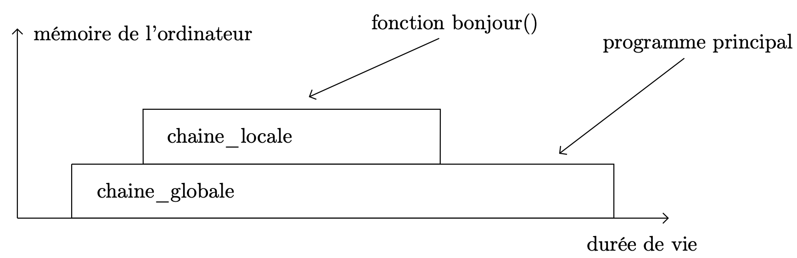
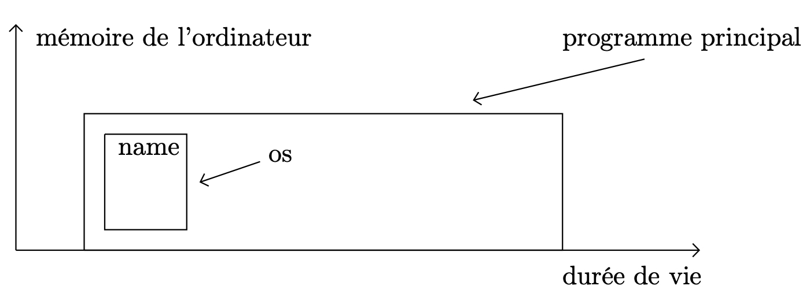

Ce chapitre se concentre sur les modules de Python et sur les modalités d’importation des données des modules dans l’environnement de travail.
L’objectif de ce document est de souligner l’importance d’un code modulaire, c’est à dire d’un code qui :
- puisse être utilisé dans plusieurs programmes ;
- puisse être documenté précisément ;
- soit suffisamment compact pour être étudié avec soin et en particulier testé.
Qu’est-ce qu’un module ?
- Quand la taille du code augmente, il peut être pratique de le diviser en entités organisées qui peuvent continuer à interagir.
- Un module permet aussi de se créer une « boite à outils » contenant des fonctions appelées depuis plusieurs programmes.
- Finalement, un module permet de bénéficier du travail déjà effectué, maximisant ainsi la réutilisabilité du code.
Modules et fichiers
À cette fin, chaque fichier est considéré comme un module individuel,
et réciproquement. Le nom de fichier d’un module est le nom du module
auquel on ajoute l’extension .py.
Un module peut contenir tout objet Python: variables, fonctions, classes, $\ldots$
Chemin de recherche et recherche de fichiers
L’importation de modules requiert un processus nommé chemin de recherche . C’est une procédure de recherche dans un ensemble de répertoires (dossiers) du système de fichiers — le résultat de cette recherche dépend donc de l’installation de Python et du système d’exploitation utilisé — pour trouver le fichier module:
>>> import sys
>>> print(sys.path)
['', '/Users/mats/anaconda/lib/python35.zip',
'/Users/mats/anaconda/lib/python3.5',
'/Users/mats/anaconda/lib/python3.5/plat-darwin',
'/Users/mats/anaconda/lib/python3.5/lib-dynload',
'/Users/mats/anaconda/lib/python3.5/site-packages',
'/Users/mats/anaconda/lib/python3.5/site-packages/Sphinx-1.3.1-py3.5.egg',
'/Users/mats/anaconda/lib/python3.5/site-packages/aeosa',
'/Users/mats/anaconda/lib/python3.5/site-packages/setuptools-19.4-py3.5.egg']
Dans le cas où la recherche d’un module échoue, une exception est levée par l’interpréteur :
>>> import xxx
Traceback (most recent call last):
File "<stdin>", line 1, in <module>
ImportError: No module named 'xxx'
Puisque le chemin de recherche consiste à construire une liste de
répertoires (dossiers), il est possible de la modifier. La méthode de liste append()
permet d’importer un module situé dans un répertoire absent du chemin de
recherche:
>>> sys.path.append('/home/utilisateur/dossier-modules')
Portée des variables et espaces de noms
La portée d’un identificateur est la portion du programme à laquelle sa déclaration s’applique. On emploie également le terme de visibilité .
Les variables définies dans une fonction ont une portée locale, celles définies au plus haut niveau d’un module ont une portée globale.
>>> chaine_globale = "Salut"
>>> def bonjour():
… chaine_locale = "la planète"
… print(chaine_globale + chaine_locale)
>>> bonjour()
Salut la planète
>>> print(chaine_locale)
Traceback (most recent call last):
File "<stdin>", line 1, in <module>
NameError: name 'chaine_locale' is not defined

Durée de vie des variables locales et globales.
>>> chaine = "Bonjour"
>>> def au_revoir():
… chaine = "Au revoir"
… print(chaine)
>>> au_revoir()
Au revoir
Il est donc possible de « masquer » une variable globale, en utilisant une variable locale de même nom.
Import de modules
L’instruction import
L’import d’un module nécessite l’emploi de l’instruction import. La syntaxe
est la suivante :
import os
Il est possible d’importer plusieurs modules :
import os
import sys
Lorsque l’interpréteur rencontre un import, le chemin de recherche est
utilisé pour accéder au module. Si celui-ci est trouvé, il est importé. Comme annoncé ci-dessus, les
règles de portée s’appliquent : si l’import se situe au niveau du module, sa
portée est globale, s’il se situe dans une fonction, sa portée est locale.
. doit être utilisée afin d’utiliser ces objets.
>>> import os
>>> print(name)
Traceback (most recent call last):
NameError: name 'name' is not defined
>>> print(os.name)
posix
Comment accéder à la liste des objets contenus dans un module ?
On peut utiliser la fonction dir :
>>> import os
>>> dir(os)
Comment obtenir l’aide d’un module ?
On peut utiliser la fonction help :
>>> import os
>>> help(os)

Résultat de l’importation du module
os. Aucune référence à l’attributnamen’existe dans l’espace de nom global.
Comment obtenir la liste de tous les modules importés par un programme ?
>>> dir()
L’expression from … import …
Il est possible d’importer des objets particuliers d’un module dans le programme. L’objet appartient alors réellement à l’espace de nom du programme.
>>> from os import name
>>> print(name)
posix
Remarque
Ce type d’import peut présenter de réels dangers dans un programme dont le nombre de lignes est important et dont le développement s’effectue sur une longue durée. Que se passe-t-il si, dans le programme principal, un attribut ou une fonction portent le même nom que l’élément importé ?
>>> def sinc(x):
... return 'coucou'*x
...
>>> sinc(3)
'coucoucoucoucoucou'
>>> from pylab import sinc
>>> sinc(2)
-3.8981718325193755e-17
Remarque
Il existe une façon encore plus dangereuse d’utiliser l’expression from ... import ... :
>>> from os import *
Tous les objets contenus dans le module sont alors ajoutés à l’espace de nom globale du programme.
from nom_module import * !
L’instruction import … as …
Il arrive que l’on souhaite importer un module ou un attribut de module portant un nom déjà employé dans l’application, ou que ce nom ne convienne pas parce qu’il est trop long. On peut changer le nom lié localement du module et procéder ensuite comme avec le nom complet :
>>> import matplotlib.pyplot as plt
>>> plt.plot(x,y)
Import vs chargement
Exemple de création d’un module
- Dans le fichier
demo.py:
"""
Un module de démonstration.
"""
# Fonctions du module
def b() -> str:
"""
Affiche b.
""""
return "b"
def a() -> str:
"""Affiche a."""
return "a"
# Attributs (variables) du module
c = 2
d = 2
if __name__ == "__main__": # test des fonctions du module
assert b() == "b" # place des assert
- Dans l’interpréteur intéractif, lancé depuis le dossier dans lequel on a enregistré le module
demo.py:
>>> import demo
>>> print(demo.b())
"b"
>>> print(demo.c)
2
Mécanisme de gestion des exceptions
Lorsqu’un problème intervient lors de l’exécution d’un programme (division par zéro, tentative d’ouverture d’un fichier qui n’existe pas, erreur de syntaxe, etc.), l’interpréteur passe dans un mode particulier dans lequel il stoppe l’exécution du programme en cours et affiche une erreur :
>>> 7 / 0
Traceback (most recent call last):
ZeroDivisionError: integer division or modulo by zero
>>> f = open('monfichier.txt','r')
Traceback (most recent call last):
IOError: [Errno 2] No such file or directory: 'monfichier.txt'
>>> 3 + message
Traceback (most recent call last):
NameError: name 'message' is not defined
>>> while True print('Coucou !')
Traceback (most recent call last):
File "tm_python", line 1
>>> while True print('Coucou !')
^
SyntaxError: invalid syntax
Message d’erreur
Le message affiché contient le traceback, c’est à dire la pile d’appel — le chemin parcouru par l’interpréteur pour atteindre l’erreur (soit la liste des fonctions traversées pour atteindre l’erreur).
Ce message comporte le type d’exception levée (ZeroDivisionError, IOError, NameError, SyntaxError, etc.) et un message qui décrit le problème rencontré.
Remarque
Dans le cas d’une erreur de syntaxe, le message d’erreur indique même où est détectée l’erreur à l’aide d’une flèche (en fait, elle se trouve généralement juste avant l’endroit pointé par la flèche).
Exemple : Gestion des entrées du clavier
>>> while True:
try:
x = int(input("Entrer un nombre entier :"))
break
except ValueError:
print("Oups ! Ce n'est pas un nombre. Nouvelle tentative")
Le gestion des exceptions repose sur quelques mots clés : try, except, else
et finally et sur une liste de types d’exceptions dont la liste peut être
consultée dans la documentation en ligne de Python :
try: le bloc de code qui suit ce mot clé est exécuté séquentiellement. En cas de problème, l’exécution est interrompue et l’interpréteur passe au bloc d’instructions suivant le mot clé except.except NomErreur: ce bloc d’instructions est exécuté si une erreur a été détectée dans le bloc try et si son type correspond à NomErreur. Plusieurs clauses except peuvent être utilisées. Il n’est pas nécessaire d’indiquer le type de l’erreur (tous les types sont alors traités de façon identique).else: cette directive permet d’isoler dans la partie try la ou les instructions qui peuvent poser problème. Toutes les instructions suivantes (qui ne doivent donc être exécutées que si aucun problème intervient) peuvent être placées dans le bloc else.finally: le bloc qui suit est exécuté dans tous les cas de figure, qu’une exception ait été levée ou pas. C’est donc ici que l’on peut s’assurer qu’un fichier ouvert dans le bloc try est correctement fermé, quoi qu’il arrive.
Exemple : Prise en compte de plusieurs erreurs
>>> try:
f = open("fichier.txt", 'r')
s = f.readline()
i = int(s.strip())
except IOError as err:
print("I/O Erreur : {0}".format(err))
except ValueError:
print("Je ne suis pas parvenu à convertir en entier la donnée.")
finally:
f.close()
Utilisation de else.
>>> try:
f = open("fichier.txt",'r')
except IOError :
print("Je ne parviens pas à lire le fichier.")
else:
n = f.readlines()
print("Le fichier comporte {0} lignes.".format(n))
finally:
f.close()
Les exceptions dans la définition d’une fonction.
>>> def division(x, y):
try:
resultat = x / y
except ZeroDivisionError:
print("Division par zero !")
else:
print("Le resultat est {0}".format(resultat))
finally:
print("Je suis toujours présent !")
>>> division(2, 1)
Le resultat est 2
Je suis toujours présent !
>>> division(2,0)
Division par zero !
Je suis toujours présent !
Tout fichier manipulé doit être correctement fermé. Il n’est donc pas
envisageable d’utiliser la fonction open sans gérer les exceptions. Utiliser
les instructions try, except et finally peut cependant apparaître
contre-productif (cela fait beaucoup de code pour une action courante). with
permet de manipuler les fichiers en étant certain qu’ils seront fermés
correctement, quoi qu’il arrive.
>>> with open("fichier.txt",'r') as f:
for ligne in f:
print(ligne)
Application
-
Écrire un module nommé
convert_tempcontenant les fonctions réalisant les conversions entre des températures exprimées en degrés Celsius, degrés Fahrenheit et Kelvin :C2F,F2C,C2K,K2C,F2KandK2F. -
Appeler ces fonctions depuis un autre programme.